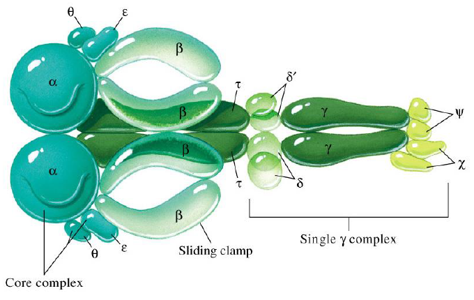

Requirements for DNA Polymerization Template: A pre-existing single strand of DNA to be copied. Primer: A short, pre-existing nucleic acid strand that is complementary to the template. It must have a free 3'-OH group, which is the starting point for the new DNA chain. Deoxynucleoside triphosphates (dNTPs): The building blocks of DNA (dATP, dCTP, dGTP, dTTP). They provide both the new nucleotide and the energy for the reaction.
DNA Polymerase
The primary enzyme that synthesizes new DNA strands.
In bacteria, the main replicative enzyme is a large complex called DNA Polymerase III.
Its structure is often compared to a right hand, with "palm," "fingers," and "thumb" domains that wrap around the DNA.
The palm contains the active site for the polymerization reaction.
DNA polymerase cannot start a new DNA chain from scratch; it can only add nucleotides to a pre-existing 3'-OH end provided by a primer. (From the 5->3)
Bacteria have several types of DNA polymerases, with three being the most prominent.
DNA Polymerase III: This is the main replicative enzyme responsible for synthesizing the bulk of the new DNA. It is highly processive, meaning it can add a very long string of nucleotides before detaching. This is due to its association with a β-subunit sliding clamp. It also has a 3'→5' exonuclease activity for proofreading.
DNA Polymerase I: This enzyme has a crucial cleanup role, primarily on the lagging strand. Its main functions are to remove the RNA primers using its 5'→3' exonuclease activity and simultaneously fill in the resulting gaps with DNA. It is less processive than Pol III and also has a 3'→5' proofreading ability.
DNA Polymerase II: This polymerase is primarily involved in DNA repair processes that occur after replication is complete.
The DNA Polymerase III operating at the replication fork is a large, multi-protein complex, often called the holoenzyme.
Core Enzyme: This is the catalytic heart of the polymerase. It consists of:
- α (alpha) subunit: Contains the primary 5'→3' polymerase activity.
- ε (epsilon) subunit: Possesses the 3'→5' exonuclease activity for proofreading.
- θ (theta) subunit: Stimulates the proofreading activity.
Sliding Clamp (β-subunit): A ring-shaped dimer of two β (beta) subunits that encircles the DNA. It holds the core enzyme firmly onto the DNA, dramatically increasing its processivity.
Clamp Loader (γ complex): This multi-subunit complex is responsible for loading the sliding clamp onto the DNA using ATP for energy. 
The Asymmetrical Replication Fork In bacteria, replication starts at a single origin of replication and proceeds in two directions. Because the two DNA strands are antiparallel and DNA polymerase only synthesizes in the 5' to 3' direction, the two new strands are made in different ways. This creates an asymmetrical structure called the replication fork.
Leading and Lagging Strand Synthesis Leading Strand: This new strand is synthesized continuously in one long piece. Its direction of synthesis (5' to 3') is the same as the overall direction of the replication fork's movement. Lagging Strand: This new strand is synthesized discontinuously, in the opposite direction of the fork's movement. The polymerase uses a "backstitching" mechanism, creating a series of short DNA fragments.
Okazaki Fragments Okazaki fragments are the short, separate pieces of DNA that are synthesized to create the lagging strand. In bacteria, these fragments are about 1000-2000 nucleotides long. They are later joined together by another enzyme (DNA ligase) to form a complete, unbroken strand.
This enzyme is responsible for unwinding the DNA double helix.
- It is a hexameric (six-subunit) protein that forms a ring structure around a single DNA strand.
- Using energy from ATP hydrolysis, it moves rapidly along the strand, prying apart the helix in front of the replication fork.
Once the DNA is unwound, these proteins bind to the exposed single strands.
- They prevent the strands from immediately re-annealing (base-pairing back together).
- They also prevent the single strands from folding back on themselves to form hairpin structures.
- This keeps the template DNA straight and accessible for the polymerase.
Nuclease is a general term for an enzyme that cleaves the phosphodiester bonds of nucleic acids.
- Endonuclease: Cuts within a nucleic acid chain.
- Exonuclease: Cuts at the end of a nucleic acid chain, removing nucleotides one by one. There are two types relevant to replication:
- 5'→3' exonuclease: Removes nucleotides from the 5' end (used by DNA Pol I to remove RNA primers).
- 3'→5' exonuclease: Removes nucleotides from the 3' end (used by Pol I and Pol III for proofreading).
DNA polymerases have an intrinsic "self-correcting" mechanism to ensure high fidelity.
- The main replicative polymerases (Pol I and Pol III in bacteria) have a 3'→5' exonuclease activity.
- If the polymerase adds an incorrect, mismatched nucleotide, it stalls.
- The end of the growing strand is moved from the polymerase active site to a separate exonuclease (editing) site on the enzyme.
- The exonuclease removes the incorrect nucleotide.
- The strand then moves back to the polymerase site, and synthesis continues.
- This proofreading step improves the accuracy of DNA replication by about 100-fold.
Processivity is the ability of an enzyme to catalyze many consecutive reactions without releasing its substrate.
- The high processivity of the main replicative enzyme (DNA Pol III in bacteria) is due to a protein called the sliding clamp (the β-subunit).
- The clamp is a ring-shaped protein that encircles the DNA double helix.
- It binds to the back of the DNA polymerase, holding it firmly to the template strand as it moves.
- This prevents the polymerase from falling off, allowing it to synthesize thousands of nucleotides continuously.
- A separate protein complex, the clamp loader, uses ATP to open the clamp and load it onto the DNA at a primer-template junction.
The individual replication proteins do not act independently; they assemble into a large, coordinated complex called the replication machine or replisome.
- This multienzyme complex includes DNA helicase, primase, DNA polymerases, and the sliding clamp/clamp loader.
- All the components are held together at the replication fork.
- On the lagging strand, the DNA template is thought to be folded or looped back so that the polymerase synthesizing the Okazaki fragments remains physically close to the rest of the replisome.
- This coordination increases the speed and efficiency of the entire replication process.
Replication begins at specific DNA sequences called the origin of replication (ori).
- In bacteria, there is typically a single origin.
- Specialized initiator proteins bind to the origin.
- These proteins pry apart the two DNA strands, usually at an adjacent A-T rich region (which is easier to separate).
- This recruits DNA helicase and other proteins to the site, which then unwind the DNA further.
- This opening creates a replication bubble from which two replication forks proceed in opposite directions.
While the fundamental process is conserved, there are key differences in eukaryotes.
- Multiple Polymerases: Eukaryotes use different polymerases for the leading and lagging strands. DNA Polymerase α acts as the primase (synthesizing a short RNA-DNA hybrid primer), while DNA Polymerase δ (lagging) and ε (leading) are the main replicative enzymes.
- Multiple Origins: Eukaryotic chromosomes are much larger and are linear, so they have many origins of replication to ensure the entire chromosome can be copied in time.
- Okazaki Fragments: Eukaryotic Okazaki fragments are much shorter (100-200 nucleotides) than bacterial ones.
- Semi-conservative replication is the model for both, as proven in eukaryotes by experiments with BUdR labeling that produce "Harlequin Chromosomes."